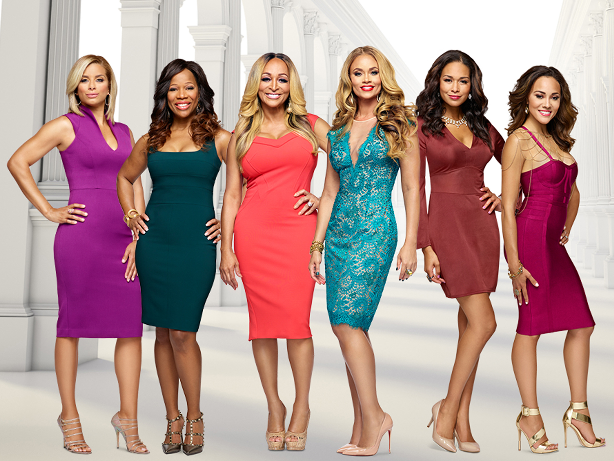
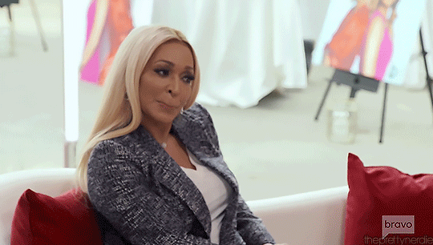
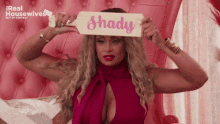

The Real Housewives Universe

RHOP
The Real Housewives of Potomac, abbreviated RHOP, is an American reality television series that premiered on January 17, 2016, on Bravo. Developed as the eighth installment of The Real Housewives franchise, it has aired eight seasons and focuses on the personal and professional lives of women living in and around Potomac, Maryland.

The cast of the recent eighth season consists of Gizelle Bryant, Ashley Darby, Robyn Dixon, Karen Huger, Candiace Dillard Bassett, Wendy Osefo, Mia Thornton and Nneka Ihim, with former housewife Charrisse Jackson-Jordan and newcomer Keiarna Stewart serving as "friends of the housewives". Other previously featured cast members include Katie Rost and Monique Samuels.


go back